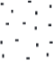
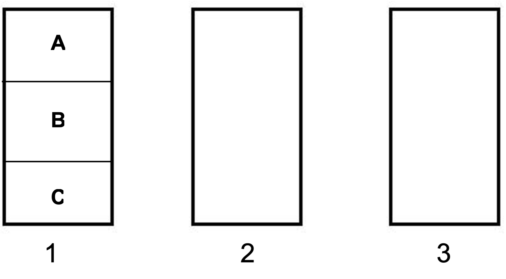

| Rock | Principle Minerals | Major Elements | Dominant Characteristic(s) (e.g. color, grain size, density, etc) |
| Granite is a common intrusive igneous rock of varying color and composition. | Quartz, Feldspar, Micas, Phosphates (Apatite) | Si, Al, O, K, Ca, P | |
| Basalt is a common extrusive igneous rock that often “rusts” due to its high iron content (sometimes referred to as “mafic” because of its high magnesium and iron content). | Fe and Mg-rich silicates (Amphiboles & Pyroxenes) | Al, O, K, Fe, Ca, Mg, some Si |
8 Rocks, Weathering, and Master Horizons
Objectives
- Identify rocks that are commonly found in Minnesota.
- Observe and identify physical and chemical weathering processes.
- Differentiate between soil horizons and soil transformation processes.
Key Words & Concepts
- Chelating
- Exfoliation
- Abrasion
- Hydration
- Hydrolysis
- Effervescence
- Hydroxides
- Dissolution
- Acidification
- Oxidation/Reduction
- Precipitated
8.1 INVESTIGATION A: Mineral Identification
Minerals, even of the same type, can vary in color and physical properties making visual identification challenging. Some of the most common and important primary soil minerals are quartz, orthoclase (feldspar), micas (biotite and muscovite), apatite, and calcite, and amphiboles/pyroxenes. Common iron-containing soil minerals are goethite and hematite. Check each one off as you read the description and examine the specimen provided.
PRIMARY MINERALS are formed from the original crystallization and solidification of magma). These minerals are present in igneous rocks and can be present in sedimentary rocks and metamorphic rocks if they survive the weathering process (sedimentary) or increased heat and pressure (metamorphic).
□ Quartz is a framework silicate mineral (composed almost entirely of SiO2) that is very common in soils. It is fairly easy to recognize. It is usually colorless, transparent to translucent, and often is slightly “frosted.” It is generally spherical in shape but may appear as chips or flakes. Quartz is highly resistant to weathering, which accounts for its predominance in the sand fraction of most soils and as the major component of many sand beaches.
□ Orthoclase (KAlSi3O8) is an important member of the Feldspar family. It is also known as potassium feldspar and is a good source of potassium in the soil. The Feldspars are also framework silicates and are more susceptible to weathering than quartz because they contain other elements in the framework (K, Ca, Na) besides Si that form less stable bonds with O. Feldspar color varies from pink to grey depending on elemental composition.
□ Mica is an important primary phyllosilicate that is found primarily in two forms: biotite and muscovite. Biotite is dark brown to black iron-rich mica which is susceptible to weathering, while muscovite is generally colorless or lightly tinted. Note the iridescence. They both consist of thin flexible sheets that tend to separate into smaller sheets or flakes. Muscovite is named after the Principality of Moscow in Russia, where it is found in large sheets and was (believe it or not) used as a glass alternative in windows centuries ago.
□ Apatite is actually the name of a group of calcium phosphate minerals that vary slightly in composition. Apatite is present at low concentrations in many igneous rocks and can also be formed as secondary minerals in sedimentary rocks. The most common form is fluorapatite, (Ca5PO4)3F. The color of apatite varies. As apatite weathers, it releases phosphorus and calcium into the soil. Large deposits are an important source of commercial phosphorus fertilizer.
□ Amphiboles/Pyroxenes (Magnesium/Iron-rich Silicates) are examples of Magnesium and Iron-rich silicate minerals (present primarily in Basalt) that are usually highly susceptible to weathering and therefore only present as primary minerals in some soils. They tend to be dark in color, unlike quartz, feldspar and the phyllosilicates, which are grey to colorless.
SECONDARY MINERALS are formed in the process of weathering and transformation of primary minerals. They are present only in sedimentary and metamorphic rocks.
□ Illites, Vermiculite/Smectite, and Kaolinite are the other phyllosilicate groups that are not present in igneous rocks but are a major constituent of the clay fraction of soils. Illite is the term used for secondary micas found in the clay fraction of soils. Vermiculites and Smectites have shrink/swell properties and are formed from the weathering of micas and illites. Kaolinite is very stable and resistant to weathering (no isomorphous substitution, so no charge imbalance = a stable structure) and formed from the weathering of the other phyllosilicates.
□ Calcite (CaCO3) occurs in limestone or similarly as dolomite (Ca,Mg)CO3 in sedimentary rocks (it can be precipitated from ocean water by organisms such as Foraminifera and corals). It can also be precipitated in arid regions where soil water containing ions and carbonates is drawn to the surface and evaporated, leaving carbonate salt residues. It often appears slightly chalky and white, whether as consolidated rock or as small nodules in the soils of dry regions. Their presence in soils can buffer soil pH from the effects of acid producing processes. It is used as an amendment to raise pH.
□ Goethite (FeOOH) (pronounced GUR-tite) is an oxidized iron mineral (iron oxide) that gives many Minnesota soils their brown color. In soils, it is found mostly as thin coatings on soil particles. Goethite is often a secondary mineral, meaning that it forms through the weathering of other primary minerals such as basalt. The example given is from a large geologic deposit of Goethite – we would never observe such a large accumulation of pure Goethite in soils.
□ Hematite (Fe2O3) is another iron oxide mineral that gives other Minnesota soils a reddish color, especially those in northeast Minnesota. Hematite is the iron oxide mineral that made the Iron Range of Minnesota famous. Like goethite, it is found as thin coatings on soil particles. The example given is from a large geologic deposit of Hematite – we would never observe such a large accumulation of pure Hematite in soils.
8.2 INVESTIGATION B: Rock Identification – Rocks are Aggregates of Minerals
Rocks are composed of minerals. Observe the rock displays and complete the following tables on igneous, sedimentary, metamorphic, and organic rocks. Record the one or two characteristics of each rock that you find most obvious or most helpful for distinguishing one from the other within each rock type (i.e. within Igneous/Sedimentary/Metamorphic groups). For example, compare granite to basalt; then compare sandstone, shale, limestone, and so on.
8.2.0.1 Igneous Rock
FORMED BY THE COOLING AND SOLIDIFYING OF MOLTEN MATERIALS BROUGHT FROM THE INTERIOR OF THE EARTH TO ITS SURFACE OR NEAR SURFACE.
8.2.0.2 Sedimentary Rock
FORMED FROM MATERIAL THAT IS DEPOSITED ON THE BOTTOM OF AN OCEAN OR LAKE AND THEN CEMENTED INTO ROCK.
| Rock | Principle Minerals | Major Elements | Dominant Characteristic(s) (e.g. color, grain size, density, etc) |
| Sandstone is essentially sand-size particles cemented together by calcite, silica, or iron oxides. | Quartz, some Feldspars | Si, O, K, Ca | |
| Shale is derived from small particles (< 0 mm) that were deposited in slow-moving water. | Quartz, Phyllosilicates, Calcite (CaCO3) | Si, Al, O, Ca | |
| Limestone is a fine- grained chemical precipitate and is a common soil material in many Minnesota soils. | Calcite (CaCO3), Dolomite (Ca/MgCO3) | Ca, Mg, C-inorganic |
8.2.0.3 Metamorphic Rock
ROCK THAT WAS ONCE ONE FORM OF ROCK BUT HAS CHANGED TO ANOTHER UNDER THE INFLUENCE OF HEAT, PRESSURE, OR SOME OTHER AGENT WITHOUT PASSING THROUGH A LIQUID PHASE.
| Rock | Principle Minerals | Major Elements | Dominant Characteristic(s) (e.g. color, grain size, density, etc) |
| Sandstone is essentially sand-size particles cemented together by calcite, silica, or iron oxides. | Quartz, some Feldspars | Si, O, K, Ca | |
| Shale is derived from small particles (< 0 mm) that were deposited in slow-moving water. | Quartz, Phyllosilicates, Calcite (CaCO3) | Si, Al, O, Ca | |
| Limestone is a fine- grained chemical precipitate and is a common soil material in many Minnesota soils. | Calcite (CaCO3), Dolomite (Ca/MgCO3) | Ca, Mg, C-inorganic |
8.3 INVESTIGATION C: Mineral Identification in the Sand Fraction
Minerals, even of the same type, can vary in color and physical properties making visual four soil samples have been washed and sieved to remove the silt and clay leaving only the larger sand grains. Sand grains can range in size from 0.05 to 2 mm in diameter.
Observe the four samples under the microscope. Fill out the Soil Mineral Observations table below. Record the presence of any quartz, feldspars, amphiboles/pyroxenes, shale, limestone, and organic matter.
Use your findings from Investigations A and B and other examples provided to help with identification. Record the quantity of each fragment as “N,” “F,” “C,” or “M” in the square under the corresponding mineral or mineral color. Consult the table legend and two other tables below. Describe the color of any coatings and state which minerals have coatings. Coatings usually only partially cover the grain.
Soil Mineral Observations
| Soil | Color | Qz | Feld | A/P | Sh | Ls |
| 1 | ||||||
| 2 | ||||||
| 3 | ||||||
| 4 |
Qz = quartz (colorless/frosted) Feld = feldspars (pink/grey) A./P. = amphiboles/pyroxenes (dark/black) Sh = shale (dull gray/brown) Ls = limestone (chalky white) Color = overall sand color (grey, brown, red, etc.)
Quantity of Fragments
| Class | Abbr | % of Area Covered |
| None | N | Not observed |
| Few | F | Less than 2 |
| Common | C | 2 to less than 20 |
| Many | M | 20 or more |
Area of Coverage
2% 
20%
8.4 INVESTIGATION D1: Physical Weathering
Physical weathering involves mechanical processes by which rocks exposed to weathering break down into smaller rocks or to their constituent minerals. Smaller rocks and particles are more susceptible to chemical weathering. Note that some sources of physical weathering can also be involved in chemical weathering.
Abrasion: Water carrying suspended rock fragments has a scouring action on surfaces. Examples are the grinding action of glaciers, gravel, pebbles and boulders moved along and constantly abraded by fast-flowing streams. Particles carried by wind also have a “sand-blasting” effect.
Wetting and drying: Water penetrates into rocks and reacts with their constituent minerals resulting in recrystallization and increased stress. Wetting and drying is sometimes accompanied by shrinking and swelling, which also increasing internal stress.
Freezing and thawing: When water is trapped in the rock (or in cracks) repeated freezing and thawing results in forces of expansion and contraction (when water freezes, its volume increases by about 9%).
Heating and cooling: Each different mineral in the rock will expand and contract by a different amount and at a different rate with surface-temperature fluctuations. With time, the stresses produced are sufficient to weaken the bonds along grain boundaries resulting in flaking off of rock fragments at the rock’s surface.
Unloading/Exfoliation: Many rocks are formed at great depth under intense temperatures and pressures. As these rocks make their way to the surface and overlying rock is removed through erosion, some of the pressure is released. This release of pressure causes the rock to fracture horizontally. Cracks of this type increase in number as the rock reaches the surface.
Observe the examples of physical weathering, then complete the table below. Record ONE POTENTIAL weathering process for each example and give a brief description of the process.
| Example | Physical Weathering Observations |
| 1 | |
| 2 | |
| 3 | |
| 4 |
8.5 INVESTIGATION D2: Chemical Weathering
Chemical weathering involves chemical processes by which rocks and minerals exposed to the weather undergo changes in composition or crystallinity, or are removed from the rock.
Hydration: Ions have the tendency to attract water molecules (hydrate) and dissociate when water is present. This kind of weathering happens in arid environments where salts are present.
Hydrolysis: Water molecules at the rock’s mineral surface dissociate into H+ and OH- and the mobile H+ ions penetrate the rock’s crystal lattice. This creates a charge imbalance that causes cations (e.g. Ca2+, Mg2+, K+ and Na+) to diffuse out.
Oxidation-Reduction: Several primary minerals contain Fe2+ and Mn2+. In an oxidizing environment, Fe2+ is oxidized to Fe3+. The change in oxidation state changes the size of the ion resulting in internal stresses and accelerated weathering. Reduced iron (Fe2+) is soluble and can be removed from the rock or mineral, while oxidized iron (Fe3+) is insoluble and remains in place.
Dissolution: Occurs when the component minerals of rocks are dissolved by water. The dissolved material is transported away leaving a space in the rock.
Acidification: Dissolving of calcium carbonate (limestone) in acidic groundwater. One consequence of this process is the formation of caves in limestone areas.
Observe the examples of chemical weathering then complete the table below. Record ONE POTENTIAL weathering process for each example and give a brief description of the process.
| Example | Chemical Weathering Observations |
| 1 | |
| 2 | |
| 3 |
8.6 INVESTIGATION D3: Physical Weathering
Biological weathering involves physical and chemical processes by which organisms weather rocks.
Plant roots: Woody plant rots, especially trees, can preferentially grow into fissures in rocks and split them apart as the roots grw and expand.
Digging and crushing by animals: Animals (including humans) assist in the physical breakdown of rocks by digging burrows, bioturbation, or even purposely crushing rock materials such as in many human activities.
Lichen: Lichen play an important part in chemical weathering because they producing organic acids that act as chelating (chelate = claw, it is a compounds that “grabs” elements such as Fe) agents that trap the insoluble elements of the decomposing rock in soluble organo-metallic complexes and destroy the crystal structure of the component minerals.
Observe the examples of biological weathering then complete the table below. Record ONE POTENTIAL weathering process for each example and give a brief description of the process.
| Example | Biological Weathering Observations |
| 1 | |
| 2 |
8.7 INVESTIGATION E: Weathering Examples
- Using an eye dropper, apply a drop of 10% hydrochloric acid to the limestone rock located in the test plates.
a. Describe what you see when the acid makes contact with the limestone rock.
b. Describe what happens to the rock.
c. What type of weathering does this represent?
- These two salt samples (NaCl crystals; common table salt) were equal in size at the beginning of this experiment. Using the squirt bottle, apply a stream of water to an edge or corner of the salt block on the left.
a. Describe what you see when the water makes contact with the salt.
b. Describe what happens to the salt block.
c. What type of weathering does this represent?
- How might physical weathering help promote chemical weathering?
8.8 INVESTIGATION F: Naming Master Horizons - Review
Observe the six mini-monoliths on the table. The monoliths are scaled so that one inch on a monolith equals four inches on a soil profile. Label the master horizons and the mark depths of these horizons for monoliths 2 through 3. Monolith 1 is done for you. Note that horizon depth is always measured from the soil surface. All profiles are 48” deep. NOTE: There are no “O” (organic) horizons in this investigation.
 Remember: 1 monolith inch = 4 soil profile inches